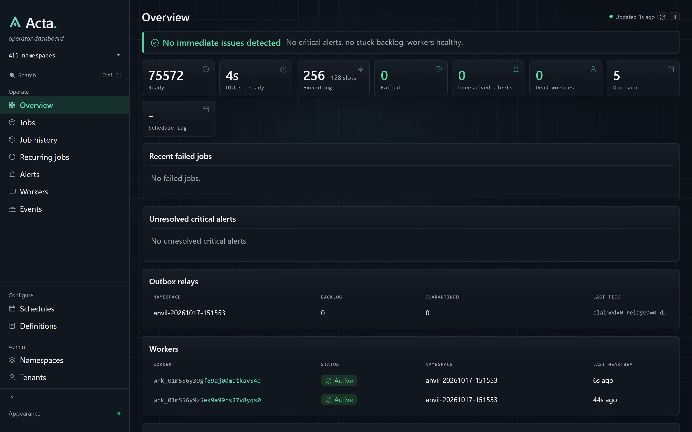

How Acta decides which job runs next.
Only the head of each lane can be claimed, jobs without a lane run in parallel, and any worker can take the next one.
Step through itopen source · postgres · sql server · sqlite
acta, n. pl. · Latin: the things that have been done; the official record of proceedings.
Durable background jobs for .NET.
Kill the worker. Keep the work.
Enqueue, schedule, retry, and wait on work that survives crashes and deploys. Every job is a row in the Postgres, SQL Server, or SQLite you already run, with fan-out, recovery, a dashboard, and a CLI built in.
Because production happens: workers die holding work, retries repeat side effects, jobs get "stuck" and nobody can say why. Acta makes every job, attempt, lease, and retry durable SQL state you can see, query, and act on: no broker, no sidecar, no workflow SaaS.
The code
The [Job] name is the durable, operator-facing contract; enqueue is typed, dispatch is source-generated. And the state it creates isn't hidden in a broker or a SaaS console: it's rows you SELECT.
public sealed record DeliverWebhook(Guid DeliveryId, Uri Endpoint, string Payload);
public sealed class WebhookJob(IWebhookSender sender)
{
[Job("deliver-webhook")]
public Task Handle(DeliverWebhook input, CancellationToken ct) =>
sender.SendAsync(input.Endpoint, input.Payload,
idempotencyKey: input.DeliveryId.ToString(), ct);
}
// enqueue from anywhere in the host
await jobs.EnqueueAsync(new DeliverWebhook(
Guid.CreateVersion7(),
new Uri("https://partner.example.com/hooks/orders"),
"""{"orderId":"ORD-1042","status":"shipped"}"""), ct: ct);-- In-flight work and who holds it.
select job_id, job_name, status,
leased_by_worker_host,
lease_expires_at_utc
from acta.jobs_view
where status = 'executing';Jobs, attempts, leases, events, schedules, checkpoints, workers, alerts: all rows, with curated operator views. A job that failed a month ago is still there to inspect, and to restart with its stored input.
How it runs
A job is done when its completion is a committed row, not when the handler returns. A crash before that commit runs the job again; a crash after it never loses it.
Completions that arrive while the finalizer is writing go out in the next commit, up to 128 at a time, so durability does not cost a commit per job. One box drained 23,349 jobs a second on PostgreSQL. Engine round
A slow database stops intake instead of filling memory. A worker renews only the rows it holds, so when one dies its rows run out their lease and any peer takes them.
Optional Redis only rings the bell so idle workers wake sooner: SQL remains the only durable truth.
Every cap, inside one workerWalkthroughs
Three interactive walkthroughs, each on its own page: a handful of jobs and workers, moved one step at a time, with what the database records at every step.
Only the head of each lane can be claimed, jobs without a lane run in parallel, and any worker can take the next one.
Step through itFour independent gates. A job passes every gate it carries, and a job that carries none is never slowed by them.
Step through itEvery worker is a peer on the same rows. Add one and it starts claiming; kill one and the work it held comes back to the others.
Step through itInstall
The provider package carries the runtime, the source generator, the analyzers, and the operator CLI. No broker to stand up, no sidecar, no service to operate. The embedded dashboard is one more package, Acta.AspNetCore, when you want it. Acta is still in release candidates, so the commands carry --prerelease.
dotnet add package Acta.Sqlite --prerelease
dotnet add package Acta.Postgres --prerelease
dotnet add package Acta.SqlServer --prerelease
Requires .NET 10. The schema is a precondition, not a side effect: apply it with the committed provisioning script, or set ApplyMigrationsOnStartup for local work. Use Acta when the work must outlive the process that started it.
What you can build
Different domains, one shape
No domain types: a step may call a model, a payment rail, FFmpeg, or a machine. What these share is work measured in minutes or days, expensive to repeat, and unacceptable to lose.
Engineering labs
Nine questions, answered in rows
Each lab is a small project whose README asks the question and prints the rows that answer it. The field guide orders them into a 45-minute tour.
One job row per recurring slot, re-armed on every fire, with coincident schedules coalesced and missed windows skipped or caught up once.
103-multiple-schedulesActa.Testing drives the real runtime one tick at a time, each test in its own schema, in tens of milliseconds.
Claim, lease, and recovery are SQL, and recovery rides every worker’s heartbeat: the lab kills a worker mid-attempt and another recovers the job.
705-worker-crash-recoveryapp jobs explain reads a job’s durable state and says what to do; jobs debug runs one job under your debugger.
A concurrency-key loser re-arms instead of waiting on a lock, and a rate limit books each job its turn.
209-concurrency-keyAtMostOnce() never runs a step body twice: an interrupted step throws, and the handler reconciles.
Children are normal jobs, and the parent waits on a durable latch without holding a lease.
211-child-jobsThe worker runs from a handful of rows (steps, variables, signals, timers, results, events) that operators read through views.
201-durable-checkoutCodes are small integers, the hot row stays narrow, and the model is frozen at 1.0: only additive migrations from here.
docs/reference/data-model.mdHow it compares
This table is the short version. The full fit guide covers when to keep exactly what you have. Choosing Acta
The dashboard
The embedded dashboard reads the same durable rows you can query yourself (backlog, failures, dead workers with heartbeats, next schedules) and says what needs action. It ships inside your app as a library, local-only by default (browse to it as localhost or 127.0.0.1), with mutating verbs off until you enable them; removing the local-only guard without configuring authorization does not degrade, it refuses to start.

Numbers & boundaries
One rig (32 logical cores, NVMe), the release preset (one warmup, one measured run, 5,000 jobs), the release candidate beside the previous one in the same hour, for regression tracking and rough sizing, not capacity claims.
Each of about 945 conformance specs drives a real Acta runtime, claiming, executing, settling, and recovering, against a real database, and the same spec runs on all three providers: 2,811 end-to-end runs plus 1,897 unit and contract tests. Test speed is a feature, so the suites are measured, too.
| Suite | Tests | Wall | p50 | p90 | p95 | p99 |
|---|---|---|---|---|---|---|
| Unit and contractno database | 1,897 | 12 s | 0.4 ms | 44 ms | 62 ms | 151 ms |
| End to endPostgreSQL | 945 | 12 s | 29 ms | 92 ms | 224 ms | 2.34 s |
| End to endSQLite | 91924 provider-skipped | 28 s | 13 ms | 44 ms | 121 ms | 1.08 s |
| End to endSQL Server | 947 | 21 s | 31 ms | 111 ms | 365 ms | 2.39 s |
Wall is the whole suite as it normally runs, every test in parallel against one database, each suite on its own. The percentiles are each test's own time, from the same suite run one test at a time, so they leave out waiting for other tests. The p99 tail is the chaos and timing specs that wait out a lease or a poll on purpose. Measured 2026-10-01 on the release candidate against fresh databases, one rig: 32 logical cores, NVMe, Docker PostgreSQL 18 and SQL Server 2022. Beyond the suites, every release also runs a package smoke and the chaos certification. Certification records
AtMostOnce() trades possible duplication for an explicitly ambiguous outcome. At-most-once stepsBackgroundService or cron.Capabilities · quick reference
The one-line version of everything Acta does. Each is explained, with the API behind it, in the guide.
AtMostOnce(): record intent before invocation; reconcile an interruption600/m per definition, one meter per keyjobs debug under a breakpoint[Job] is the durable nameRun it
Fresh clone to a running durable job on embedded SQLite: then point the same code at Postgres or SQL Server when it matters. Apache-2.0: the runtime, dashboard, CLI, and all SQL providers are free.
$ git clone https://github.com/acta-dotnet/acta && cd acta
$ dotnet run --project concepts/000-fundamentals/001-hello-acta
Enqueued. The worker is running - press Ctrl+C to stop.
Hello, World!
# press Ctrl+C, then:
$ dotnet run --project anvil/Anvil
Anvil : http://127.0.0.1:5059/